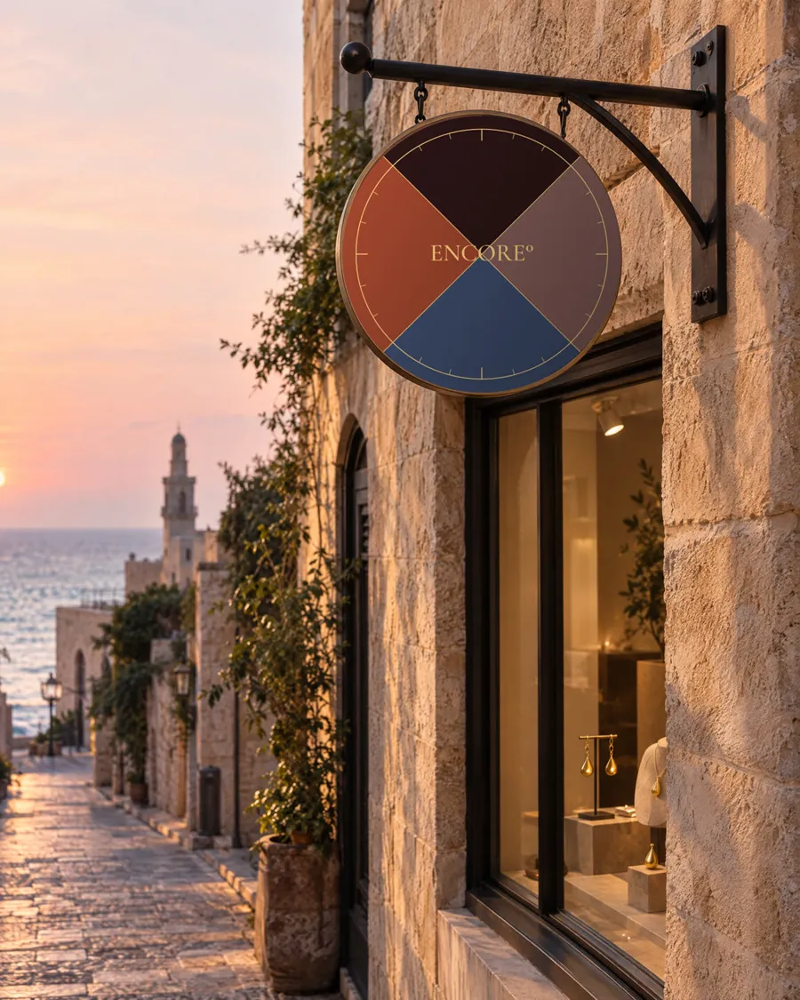
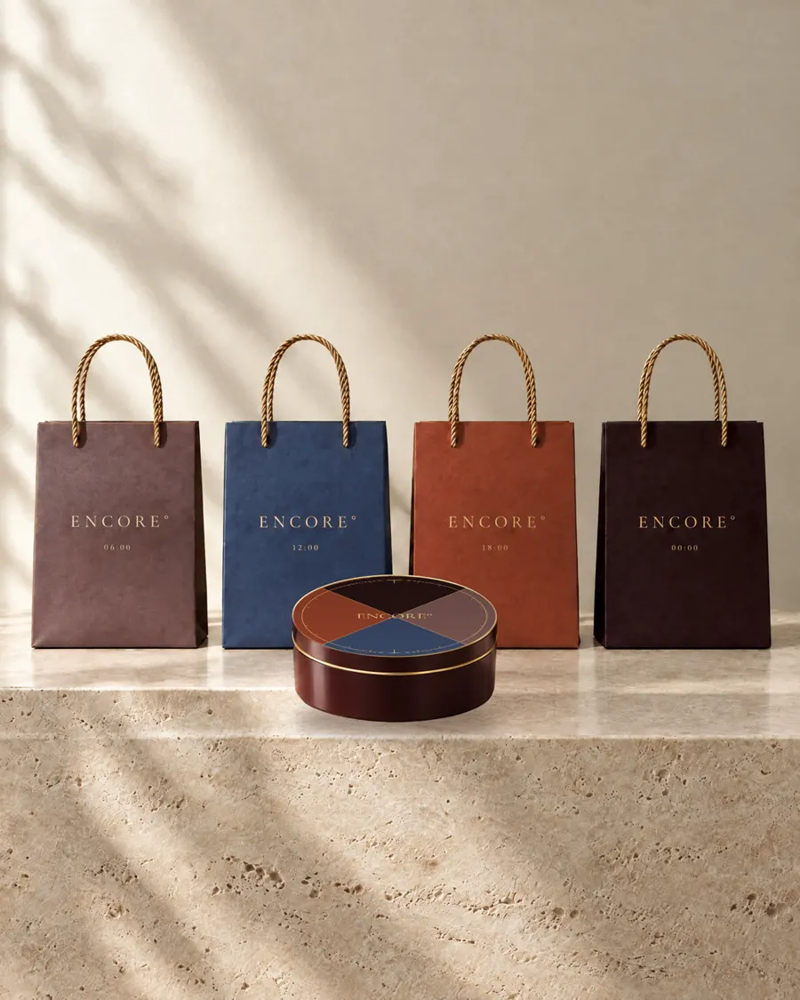
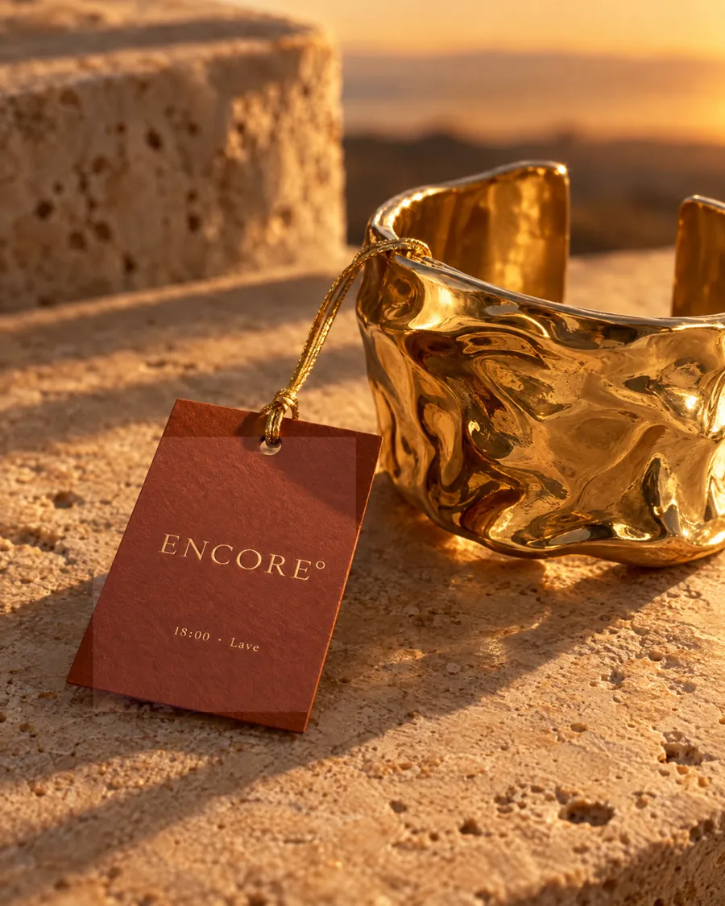
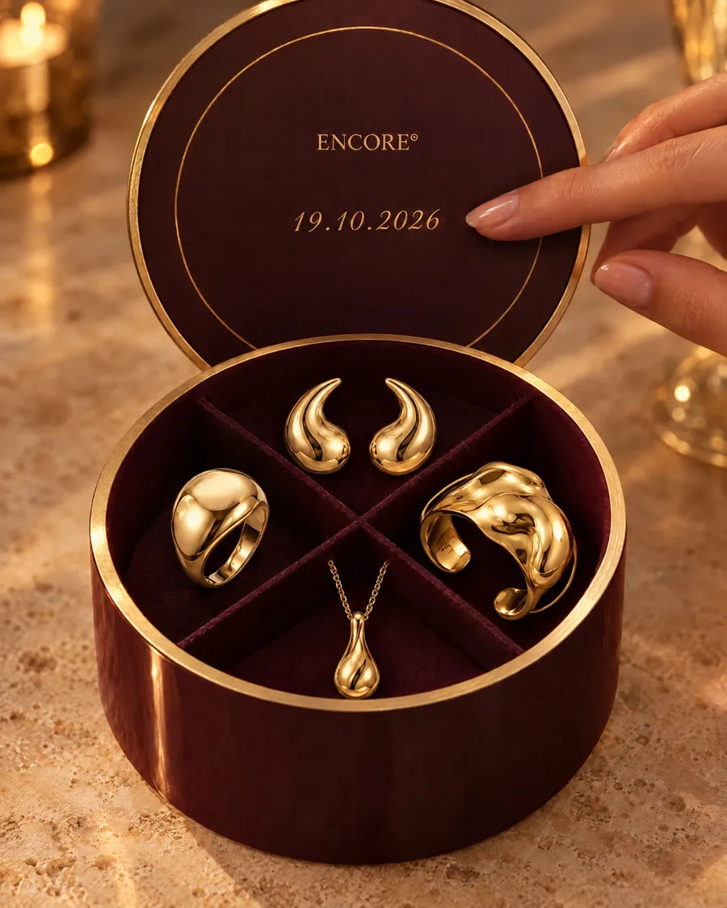

01
החוגה
הסמל המלא. מופיע רק במקומות של "הבית": השלט, מכסה הקופסה, האווטאר. הלילה תמיד למעלה.
ספר מותג מקוצר · ENCORE° · עולם קונספט בדיוני מס׳ 28
כל תכשיט של ENCORE° שייך לאחת מארבע שעות ביום. לכן המותג לא צריך עוד סמל, כי הוא כבר שעון: חוגה אחת שמחולקת לארבעה רבעים, וכל נקודת מגע לוקחת לעצמה רבע אחד. הספר הזה מראה איך החלטה אחת מחזיקה את כל העולם, מהשלט בסמטה ביפו ועד הקבלה.
ההחלטה האחת
בתכשיטים יש אינסוף מותגים, וכמעט כולם מראים זהב יפה על רקע קרם. אם כולם נראים אותו דבר, הלקוחה משווה מחירים. ENCORE° לא מתחרה על היופי של הזהב. הוא מתחרה על הזמן שהתכשיט נשאר עלייך.
משפט אחד שהמותג מחויב אליו. כל החלטה עיצובית נבדקת מולו.
מההבטחה נגזר האלמנט: יום שלם משחר ועד לילה, שהתכשיט עובר בלי שמחליפים אותו.
אי אפשר להשוות יום שלם למחיר של שרשרת. מי שמזהה את העולם לא פותחת טבלה.
ערכת הזיהוי
המותג לא נשען על השם. כל אחד מהקודים, גם כשהוא מופיע לבד ובקטן, מחזיר אל ENCORE°. בכל נקודת מגע מופיעים לפחות שלושה מהם.
הסמל המלא. מופיע רק במקומות של "הבית": השלט, מכסה הקופסה, האווטאר. הלילה תמיד למעלה.
החוגה מצוירת כקו, ורק רבע אחד שלה מואר. מופיע על כל מוצר ששייך לשעה אחת ומסמן אותה בלי מילים.
שעה בפורמט של 24 שעות, עם נקודתיים וריווח רחב, תמיד מתחת לשם. זו החתימה של כל תכשיט.
הסימן הקטן ביותר, והוא נושא את כל המותג: על חותם שעווה, על אבזם, ולבד על פריט קטן מ־3 ס״מ.
זהב משמש רק כקו, אף פעם לא כמילוי: פיקסל אחד על המסך, הטבעה דקה בדפוס. מסגרת, שוליים, ציר.
פלטה
כל צבע מייצג שעה ביום, לא קישוט. כל מוצר מקבל שעה אחת, ושקית בצבע השעה של התכשיט שנקנה. סט שלם יוצא בשקית של ארבעה צבעים. רק החוגה מחזיקה את כל השעות יחד.
הדבר הראשון שאת עונדת בבוקר.
טבעותבאמצע היום, היא עדיין שם.
שרשראותצמיד שזוכר איפה היית.
צמידיםכשהיום נגמר, את נשארת.
עגיליםטיפוגרפיה
כותרת · Frank Ruhl Libre
צמיד שזוכר איפה היית.
שעה ושם התכשיט · Cormorant Garamond
06:00Goutte
גוף · Heebo Light
הטקסט תמיד בעברית ושקט. שם התכשיט תמיד בצרפתית ובאיטליק. המספר תמיד בפורמט של 24 שעות. אלה שלוש שפות שלא מתערבבות, ולכן כל אחת מהן מזוהה מיד.
קול
ENCORE° לא משכנע ולא ממהר. הוא מדבר אל הלקוחה בלשון נקבה, על הרגע שלה ביום, ולא על מה שחסר לה.
בלי סימני קריאה ובלי דחיפות. מותג שמבטיח תכשיט שלא יורד לא צריך להרים את הקול, ו״מבצע״ הופך את היום שלה בחזרה למחיר של שרשרת.
06:00הדבר הראשון שאת עונדת בבוקר.
18:00צמיד שזוכר איפה היית.
00:00כשהיום נגמר, את נשארת.
מבחן הכיסוי
אם צריך את הלוגו כדי לזהות פריט, המערכת לא עובדת. על אף אחד מהפריטים האלה לא מופיע השם, ובכל זאת ברור מיד של מי הם.
נקודות מגע
חמש נקודות מגע, ומתחת לכל אחת: הקודים שעושים את העבודה. בעולם עצמו הן נכנסות אחת אחרי השנייה לחלון עגול באותה חוגה, בסקשן Hors la boîte.




הכיוונים הבאים
שפה טובה ממשיכה לייצר נקודות מגע חדשות בלי להמציא את עצמה מחדש. שלושת הכיוונים האלה מופיעים בעולם, בסקשן Ailleurs, וכל אחד מהם נבנה רק מהקודים שכבר יש.
תעודת האחריות רושמת את השעה שבה התכשיט נענד לראשונה, לא רק את התאריך. רבע אחד מואר, והשאר מחכים לסט.
התאריך שנחרט בקופסה חוזר אחרי שנה בדיוק, כהזמנה לליטוש. המותג לא מוכר עוד תכשיט. הוא חוגג את הזמן שהראשון נשאר.
החלון מתחלף כל שש שעות, לפי השעה. מי שעוברת בבוקר ובערב רואה שתי חנויות אחרות, ורק שעה אחת מוארת בכל רגע.
כללים
כל תוכן של ENCORE° קורה באחת מארבע שעות, והצבע שלו הוא הצבע של השעה. קודם שואלים "איזו שעה זו?", ורק אחר כך מחליטים מה מצלמים.
התכשיט, הדוגמנית, העונה, הקמפיין. אפשר להשיק קולקציה חדשה כל חודש, כל עוד היא נכנסת לאחת מארבע השעות.
קמפיין חגים של זהב מבריק על רקע קרם. ברגע ש־ENCORE° מראה תכשיט בלי שעה, הוא חוזר להיות עוד מותג יפה בטבלת ההשוואה.
שני צבעי שעה על אותו משטח מותרים רק בחוגה.
לאשקית חצי שקיעה, חצי צהריים.
החוגה לא מסתובבת. השקיעה משמאל, השחר מימין.
לאחוגה מסובבת כדי "שיתאים לעיצוב".
הטבעה דקה, מסגרת, שנתות.
לארקע מלא של זהב מבריק.
פורמט של 24 שעות הוא חלק מהחותמת.
לא6 PM
העולם ממשיך · Le Monde continue
העולם לא נגמר באתר. אותה החלטה כותבת את המאמרים, את הקמפיין ואת המודעות. לפני כל פיסה שואלים: איזו שעה זו? ואחריה בודקים: מכסים את השם, ונשארים לפחות שלושה קודים.
כל מאמר עונה על חיפוש אמיתי וקורה בשעה אחת בלבד. הצבע של המאמר הוא הצבע של השעה, והשעה מופיעה לפני הכותרת.
התכשיט הראשון שעונדים הוא החלטה, לא אביזר. מה עובר מקלחת, מקלדת וכוס קפה.
״הדבר הראשון שאת עונדת בבוקר נשאר איתך עד הלילה.״
אורך, משקל וסוגר, נבדקים מול שעה אחת של צהריים, לא מול תמונה בסטודיו.
״בצהריים אף אחד לא מתלבש מחדש. מה שענדת, נשאר.״
לא חורטים שם. חורטים את השעה שבה זה קרה, בפורמט של 24 שעות.
״יש רגעים שאת זוכרת בדיוק את השעה שלהם.״
התכשיט היחיד שעובר את הלילה. נוחות, סגירה, וזהב שלא מגרד.
״כשהיום נגמר, את נשארת. וגם הם.״
הכיוון Le Certificat מהסעיף הקודם, כשהוא יוצא לעולם. הקמפיין לא חוזר על ההבטחה. הוא מוכיח אותה.
כל תכשיט שנמכר מקבל תעודה. היא לא רושמת רק תאריך, היא רושמת את השעה שבה ענדת אותו לראשונה. מהרגע הזה התכשיט שייך לשעה שלך.
פריים 0: השאלה, ומתחתיה התעודה עם 06:14. יד נועלת טבעת, ורבע השחר נדלק.
שקף לכל שעה, משטח אחד בצבע אחד. קו הזהב עובר בין השקפים כמו מחוג.
למי שצפתה בריל. עולה בשקיעה בלבד, עם הצמיד שבו נעצרה, ובלי מחיר בפתיח.
הודעה אישית באותה שעה שבתעודה, עם הזמנה לליטוש. הקמפיין ממשיך לבד, כמו הכיוון L'Anniversaire.
מתחת לכל מודעה: הקודים שעושים את העבודה, ומה נשאר כשמכסים את השם.
באיזו שעה ענדת
אותו לראשונה?
הדבר הראשון
שאת עונדת בבוקר.
כשהיום נגמר,
את נשארת.
30 שניות על רגע אחד: השרשרת נוחתת על הצוואר, והשעה נרשמת. שרשרת שייכת לצהריים, ולכן התעודה שלה היא 12:14 בצבע הצהריים.
הבקשה: פוסט לסוף השנה. מימין, מה שיוצא בלי עולם. משמאל, אותו פוסט כשההבטחה כותבת אותו.
השנה מתחלפת.
העגילים נשארים.
ENCORE° הוא מותג בדיוני. השיטה אמיתית: הבטחה אחת, אלמנט אחד שנגזר ממנה, וקודים שחוזרים בכל נקודת מגע עד שמזהים אותך בלי לקרוא את השם.